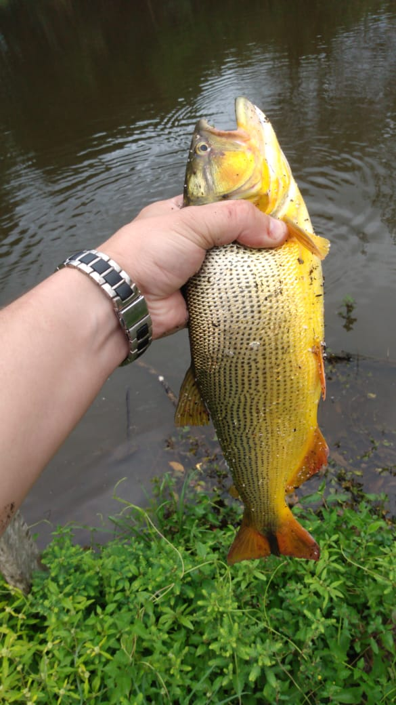
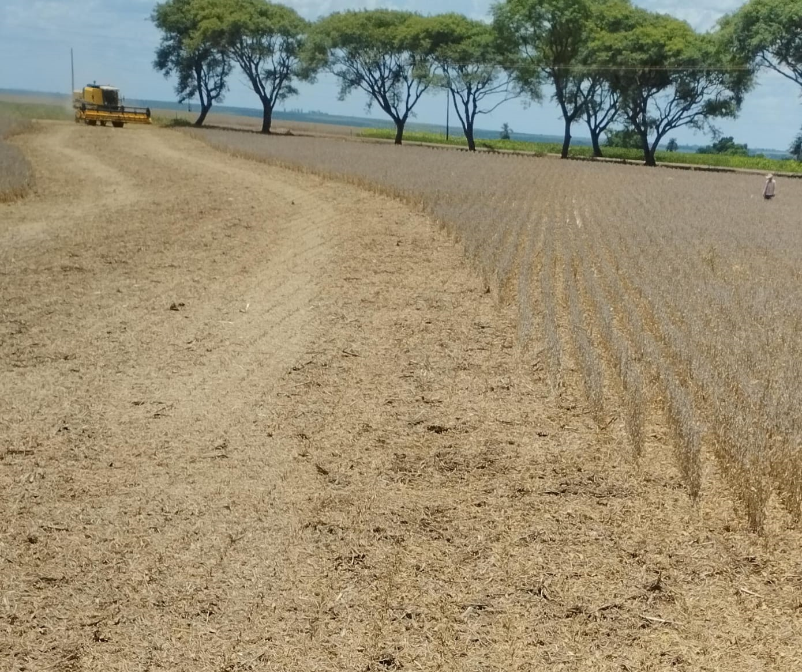
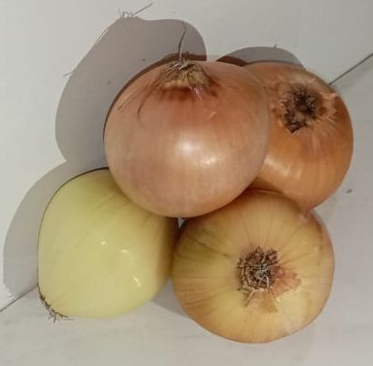

Descubra o momento ideal para cultivar suas plantas e aproveite a fase lunar mais propícia para o plantio.
 Cebolinha Verde: Cultivo e Cuidados.
Cebolinha Verde: Cultivo e Cuidados.
 Você conhece a Piscicultura?.
 Você sabe qual é o ciclo de cultivo do Milho.
Você sabe qual é o ciclo de cultivo do Milho.

Saiba como é o ciclo de cultivo do Soja.

Quer plantar cebola? aprenda a melhor época do ano para realizar o plantio.
 Ciclo de cultivo de Bovino?.
Ciclo de cultivo de Bovino?.
 Conheça o ciclo do cultivo da uva americana e europeia.
Conheça o ciclo do cultivo da uva americana e europeia.